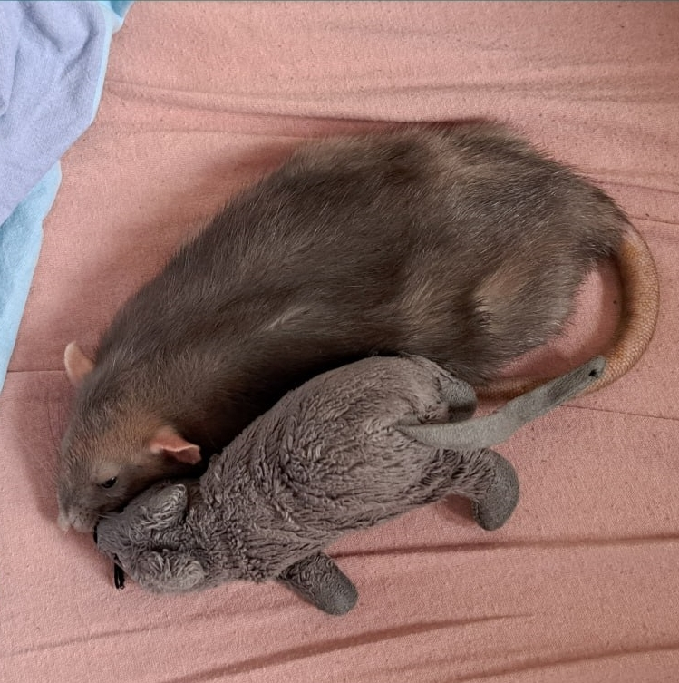

Raya: Ваш путівник
у світ домашніх пацюків.
Вітаємо у світ, де маленькі гризуни стають великими друзями! Наш сайт присвячений дивовижним домашнім пацюкам - істотам з надзвичайним інтелектом та чудовим характером. Тут ви знайдете відповіді на всі питання про догляд, харчування та забавки для ваших улюбленців.

Пацюки це дуже соціальні тварини.
Пацюки потребують постійного спілкування з собі подібними. У дикій природі вони живуть зграями, де може бути до 50 особин. В домашніх умовах тримати одного щура не рекомендується. Щоб щури були щасливими та здоровими, їм потрібна компанія щонайменше одного, а краще двох-трьох щурів.
Пацюки з'явилися 55 мільйонів років тому.

Їх еволюція розпочалася понад Це означає, що щури пережили динозаврів, льодовиковий період та багато інших катаклізмів. Їхня стійкість та здатність адаптуватися до різних умов зробили їх одним із найуспішніших видів на Землі. Сьогодні щури мешкають на всіх континентах, крім Антарктиди.
Пацюки, як і люди, бачать сни.

Дослідження на тваринах показали, що щури, як і люди, мають фази швидкого сну, коли їх мозок активний, а очі швидко рухаються під повіками. Це свідчить про те, що щури, ймовірно, бачать сни, подібні до людських.
Пацюки, як і люди, вміють сміятися.
Коли пацюків лоскочуть, вони можуть видавати звуки, схожі на сміх. Ці звуки, як правило, короткі, високочастотні та вібруючі. Вчені вважають, що це свідчить про те, що щури відчувають позитивні емоції, подібні до людського сміху.